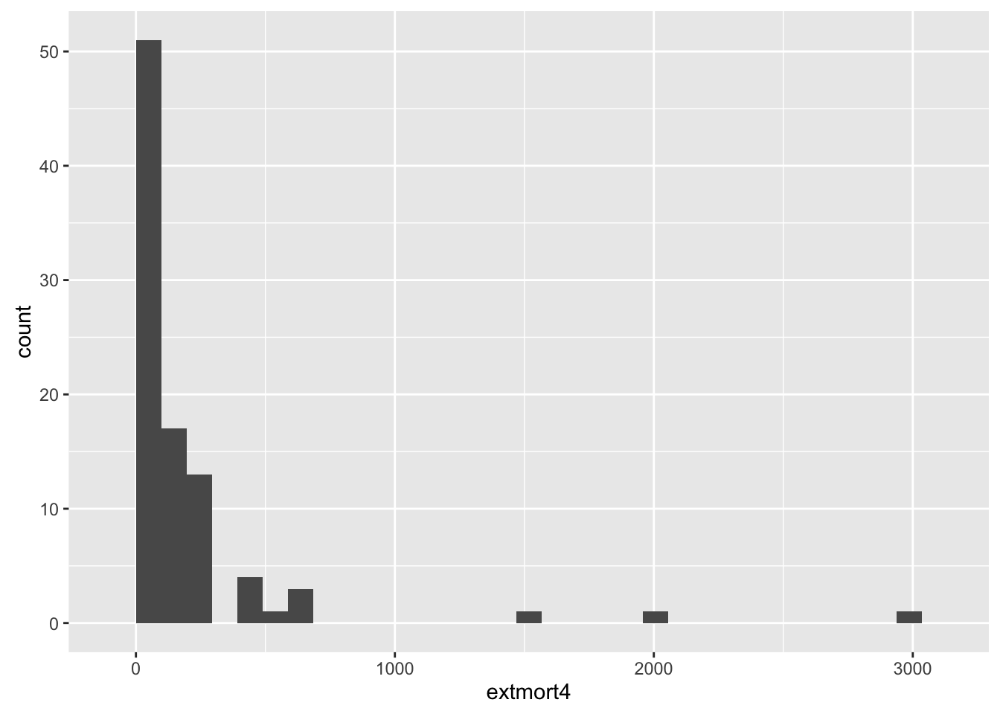
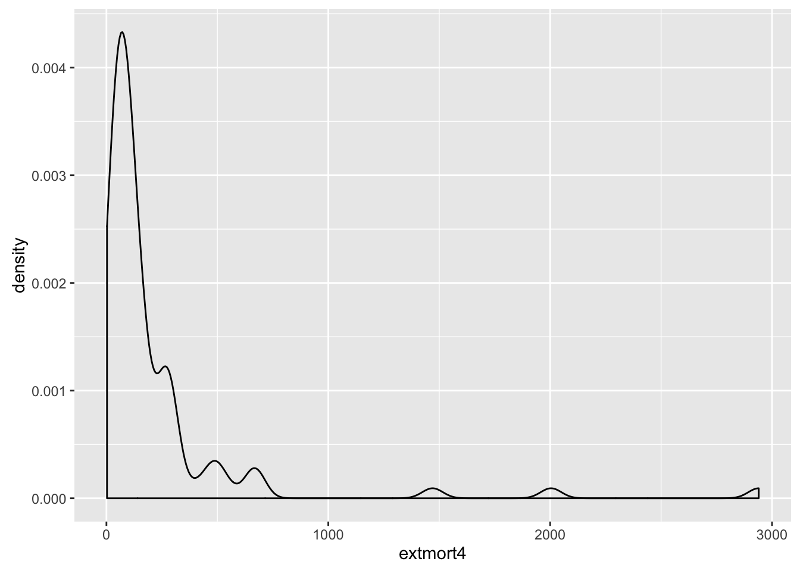
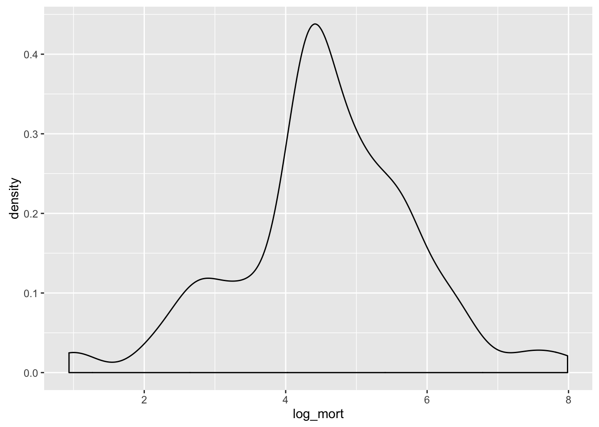
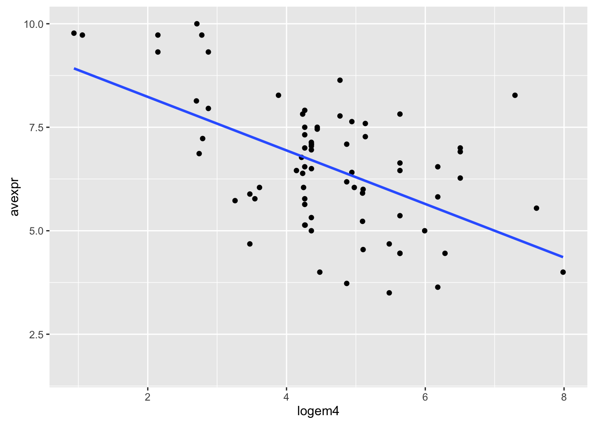
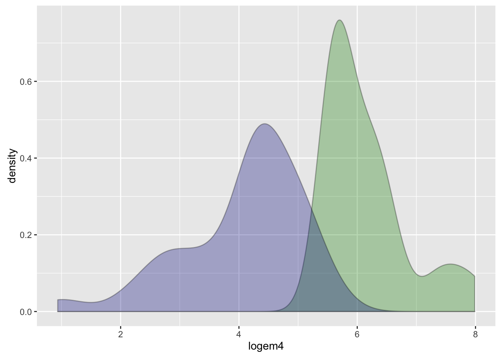

POL S/CS&SS 501, University of Washington, Winter 2016
$$ \DeclareMathOperator{\mean}{mean} \DeclareMathOperator{\var}{var} \DeclareMathOperator{\E}{E} \DeclareMathOperator{\argmin}{argmin} \DeclareMathOperator{\argmax}{argmax} $$Difference in Means. T-Distribution and Hypothesis Testing
Andreu Casas
January , 2016
Read the data in:
library(rio)
data <- import('/Users/andreucasas/Dropbox/UW/TEACHING/POLS_501_WINTER16/labs_data/data/table1.dta')Challenge
Take a look at the data:
- Are there any missing values?
- How many observations with country names (
shortnam) are in the dataset? - How many unique countries are in the dataset?
- Is there any country that shows up twice?
library(dplyr)
head(data)
nrow(na.omit(data))
head(data$shortnam)
length(data$shortnam)data %>%
filter(shortnam != "") %>%
nrow()
clean_data <- data %>%
filter(shortnam != "") %>%
filter(shortnam != ".")head(sort(table(clean_data$shortnam), decreasing = T))The first 120 rows of the original dataset do not have a value for the country-name variable (shortnam) and they also have missing values for most of the other variables. Not clear what they are: getting rid of them.
When importing STATA (.dta) dataset using the rio package, we have access to the variable description. We wrote a function in the uwpols501 package to check at the variable description of STATA datasets loaded into R using rio.
library(devtools)
install_github(username = "jrnold", repo = "UW-POLS501/r-uwpols501")
library(uwpols501)
extract_var_info(clean_data)The variable extmort4 contains information about potential settlers mortality (See Note in Figure 1 of the paper for a description of the variable: measured in terms of deaths per annum per 1,000…)
Challenge
Explore the extmort4 and logem4 variable:
- How many missing values do they have?
- Do they have the same missing values? Why or why not?
- What is their mean, median, first, and third quantile?
- What would be the best way to plot this variable in order to analyze its distribution?
summary(clean_data$extmort4)
summary(clean_data$logem4)logem4 is the log of extmort4. They calculate the log of mortality-rate because they theorize that it has a log-linear relationship with the type of institutions (avexpr: average expropriation risk). However, some observations have a value for the logem4 variable but not for the extmort4 one, which does not make much sense (looks like an error). Create a new variable (e.g. log_mort) with the log of extmort4.
clean_data$log_mort <- log(clean_data$extmort4)library(ggplot2)
p <- ggplot(clean_data, aes(x= extmort4))
p + geom_histogram(bins = 30)## Warning: Removed 163 rows containing non-finite values (stat_bin).
p + geom_density() ## Warning: Removed 163 rows containing non-finite values (stat_density).
ggplot(clean_data, aes(x = log_mort)) + geom_density()## Warning: Removed 163 rows containing non-finite values (stat_density).
Use plot to explore the relationship between the variables logem4 and avexpr.
ggplot(clean_data, aes(x = logem4, y = avexpr)) +
geom_point() +
geom_smooth(method = "lm", se = F)## Warning: Removed 181 rows containing non-finite values (stat_smooth).## Warning: Removed 181 rows containing missing values (geom_point).
Another way to evaluate their theory that different institutions (avexpr: average expropiation risk) were set up in places where colonization was highly costly than in places that were easy to colonize (logem4: the log of their mortality rate measure) would be to compare the mean institution (average expropiation risk) in countries with high colonization costs and in countries with low colonization costs.
Create a new dummy variable indicating those countries that have a value of logem4 in the top quantile (==1).
clean_data <- mutate(clean_data, high_mort = as.numeric(logem4 > quantile(clean_data$logem4, probs = .75, na.rm = TRUE)))Plot the distribution of the logem4 variable for these two groups side-by-side.
ggplot(filter(clean_data, high_mort == 1), aes(x = logem4)) +
geom_density(fill= "green4", alpha = 0.3) +
geom_density(data = filter(clean_data, high_mort == 0),
aes(x = logem4), fill = "blue4", alpha = 0.3)

This work is licensed under a Creative Commons Attribution-NonCommercial-ShareAlike 4.0 International License. R code is licensed under a BSD 2-clause license.